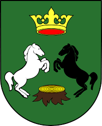

Herb Gminy Trzebieszów
Opis Herbu
Herb gminy Trzebieszów przedstawia dwa konie; białego i czarnego, oraz złotą korone na zielonym polu.
Znaczenie Barw
Symbole te nawiązują do średniowiecznej stacji królewskiej na trakcie z Krakowa do Wilna i przynależności terenów do królewszczyzny, a pniak nawiązuje do nazwy gminy, czyli miejsca, w którym wycięto las.
Konie: Symbolizują średniowieczną stację królewską w Trzebieszowie, która była ważnym punktem na trasie komunikacyjnej z Krakowa do Wilna.
Korona: Oznacza przynależność terenów gminy do królewszczyzny.
Pniak: Nawiązuje do nazwy gminy, gdzie "trzebież" oznacza miejsce, w którym wycięto las.